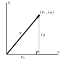

How do we add two vectors together and multiply a vector by a scalar?
How do we determine the magnitude of a vector? What is a unit vector, and how do we find a unit vector in the direction of a given vector?
Quantities like length, speed, area, and mass are all measured by numbers (called scalars). Other quantities, like velocity, force, and displacement, have two attributes: magnitude and direction. These quantities are represented by vectors and are the study of this section. For example, we will use vectors to calculate work done by a constant force, calculate torque, determine direction vectors for lines and normal vectors for planes, define curvature, and determine the direction of greatest increase on a surface. For most of these applications, we will be interested in using vectors to measure direction and/or speed. Vectors will be a major tool for us in determining the behavior of functions of several variables.
If we are at a point \(x\) in the domain of a function of one variable, there are only two directions in which we can move: in the positive or negative \(x\)-direction. If, however, we are at a point \((x,y)\) in the domain of a function of two variables, there are many directions in which we can move. Thus, it is important for us to have a means to indicate direction, and we will do so using vectors. This notion of direction in space will be critical for us to find direction vectors for lines, tangent lines to curves, normal vectors to planes, and to determine direction of motion.
Preview Activity9.3.1.
Postscript is a programming language whose primary purpose is to describe the appearance of text or graphics. A simple set of Postscript commands that produces the triangle in the plane with vertices \((0,0)\text{,}\)\((1,1)\text{,}\) and \((1,-1)\) is the following:
The key idea in these commands is that we start at the origin, then tell Postscript that we want to start at the point \((0,0)\text{,}\) draw a line from the point \((0,0)\) to the point \((1,1)\) (this is what the lineto and stroke commands do), then draw lines from \((1,1)\) to \((1,-1)\) and \((1,-1)\) back to the origin. Each of these commands encodes two important pieces of information: a direction in which to move and a distance to move. Mathematically, we can capture this information succinctly in a vector. To do so, we record the movement on the map in a pair \(\langle x, y \rangle\) (this pair \(\langle x, y \rangle\) is a vector), where \(x\) is the horizontal displacement and \(y\) the vertical displacement from one point to another. So, for example, the vector from the origin to the point \((1,1)\) is represented by the vector \(\langle 1,1 \rangle\text{.}\)
What is the vector \(\vv_1 = \langle x , y \rangle\) that describes the displacement from the point \((1,1)\) to the point \((1,-1)\text{?}\) How can we use this vector to determine the distance from the point \((1,1)\) to the point \((1,-1)\text{?}\)
Suppose we want to draw the triangle with vertices \(A=(2,3)\text{,}\)\(B=(-3,1)\text{,}\) and \(C=(4,-2)\text{.}\) As a shorthand notation, we will denote the vector from the point \(A\) to the point \(B\) as \(\overrightarrow{AB}\)
Determine the vectors \(\overrightarrow{AB}\text{,}\)\(\overrightarrow{BC}\text{,}\) and \(\overrightarrow{AC}\text{.}\)
What relationship do you see among the vectors \(\overrightarrow{AB}\text{,}\)\(\overrightarrow{BC}\text{,}\) and \(\overrightarrow{AC}\text{?}\) Explain why this relationship should hold.
Preview Activity9.3.1 shows how we can record the magnitude and direction of a change in position using an ordered pair of numbers \(\langle x,y\rangle\text{.}\) There are many other quantities, such as force and velocity, that possess the attributes of magnitude and direction, and we will call each such quantity a vector.
Definition9.3.1.
A vector is a quantity that possesses the attributes of magnitude and direction.
We can represent a vector geometrically as a directed line segment, with the magnitude as the length of the segment and an arrowhead indicating direction, as shown at left in Figure9.3.2.
Figure9.3.2.Left: A vector. Right: Representations of the same vector.
According to the definition, a vector possesses the attributes of length (magnitude) and direction; the vectors position, however, is not mentioned. Consequently, we regard as equal any two vectors having the same magnitude and direction, as shown at right in Figure9.3.2. In other words, two vectors are equal provided they have the same magnitude and direction.
This means that the same vector may be drawn in the plane in many different ways. For instance, suppose that we would like to draw the vector \(\langle 3, 4\rangle\text{,}\) which represents a horizontal change of three units and a vertical change of four units. We may place the tail of the vector (the point from which the vector originates) at the origin and the tip (the terminal point of the vector) at \((3,4)\text{,}\) as illustrated at left in Figure9.3.3. A vector with its tail at the origin is said to be in standard position.
Figure9.3.3.Left: Standard position. Right: A vector between two points.
Alternatively, we may place the tail of the vector \(\langle 3,4\rangle\) at another point, such as \(Q(1,1)\text{.}\) After a displacement of three units to the right and four units up, the tip of the vector is at the point \(R(4,5)\) (see the vector at right in Figure9.3.3).
In this example, the vector led to the directed line segment from \(Q\) to \(R\text{,}\) which we denote as \(\overrightarrow{QR}\text{.}\) We may also turn the situation around: given the two points \(Q\) and \(R\text{,}\) we obtain the vector \(\langle 3,4\rangle\) because we move horizontally three units and vertically four units to get from \(Q\) to \(R\text{.}\) In other words, \(\overrightarrow{QR} = \langle 3,4\rangle\text{.}\) In general, the vector \(\overrightarrow{QR}\) from the point \(Q = (q_1, q_2)\) to \(R = (r_1,
r_2)\) is found by taking the difference of coordinates, so that
We will use boldface letters to represent vectors, such as \(\vv = \langle 3, 4 \rangle\text{,}\) to distinguish them from scalars. The entries of a vector are called its components; in the vector \(\langle 3, 4 \rangle\text{,}\) the \(x\) component is 3 and the \(y\) component is 4. We use pointed brackets \(\langle \ , \rangle\) and the term components to distinguish a vector from a point \(( \ , )\) and its coordinates. There is, however, a close connection between vectors and points. Given a point \(P\text{,}\) we will frequently consider the vector \(\overrightarrow{OP}\) from the origin \(O\) to \(P\text{.}\) For instance, if \(P=(3,4)\text{,}\) then \(\overrightarrow{OP}=\langle 3,4\rangle\) as in Figure9.3.4. In this way, we think of a point \(P\) as defining a vector \(\overrightarrow{OP}\) whose components agree with the coordinates of \(P\text{.}\) The vector \(\overrightarrow{OP}\) is called the position vector of \(P\text{.}\)
Figure9.3.4.A point defines a vector
While we often illustrate vectors in the plane since it is easier to draw pictures, different situations call for the use of vectors in three or more dimensions. For instance, a vector \(\vv\) in \(n\)-dimensional space, \(\R^n\text{,}\) has \(n\) components and may be represented as
The next activity will help us to become accustomed to vectors and operations on vectors in three dimensions.
Activity9.3.2.
An article by C.Kenneth Tanner of the University of Georgia argues that, due to the concept of social distance, a secondary school classroom for 20 students should have 1344 square feet of floor space. Suppose a classroom is 32 feet by 42 feet by 8 feet. Set the origin \(O\) of the classroom to be its center. In this classroom, a student is sitting on a chair whose seat is at location \(A = (9, -6, -1.5)\text{,}\) an overhead projector is located at position \(B = (0,1,7)\text{,}\) and the teacher is standing at point \(C = (-2, 20, -4)\text{,}\) all distances measured in feet. Determine the components of the indicated vectors and explain in context what each represents.
a. \(\overrightarrow{OA}\)
b. \(\overrightarrow{OB}\)
c. \(\overrightarrow{OC}\)
d. \(\overrightarrow{AB}\)
e. \(\overrightarrow{AC}\)
f. \(\overrightarrow{BC}\)
Solution.
If the dimensions of the room are 32 feet by 42 feet by 8 feet, the center of the room is located at \(\langle 16 , 21 , 4 \rangle\text{.}\)
\(\overrightarrow{BC} = \langle ((-2) - 0) , (20 - 1) , ((-4) - 3) \rangle = \langle -2 , 19, -7 \rangle\text{.}\) This represents the displacement of the teacher from the projector.
Subsection9.3.2Equality of Vectors
Because location is not mentioned in the definition of a vector, any two vectors that have the same magnitude and direction are equal. It is helpful to have an algebraic way to determine when this occurs. That is, if we know the components of two vectors \(\vu\) and \(\vv\text{,}\) we will want to be able to determine algebraically when \(\vu\) and \(\vv\) are equal. There is an obvious set of conditions that we use.
Equality of Vectors.
Two vectors \(\vu = \langle u_1, u_2 \rangle\) and \(\vv = \langle v_1, v_2 \rangle\) in \(\R^2\) are equal if and only if their corresponding components are equal: \(u_1 = v_1\) and \(u_2 = v_2\text{.}\) More generally, two vectors \(\vu = \langle u_1, u_2, \ldots, u_n\rangle\) and \(\vv = \langle v_1, v_2, \ldots, v_n \rangle\) in \(\R^n\) are equal if and only if \(u_i = v_i\) for each possible value of \(i\text{.}\)
Subsection9.3.3Operations on Vectors
Vectors are not numbers, but we can now represent them with components that are real numbers. As such, we naturally wonder if it is possible to add two vectors together, multiply two vectors, or combine vectors in any other ways. In this section, we will study two operations on vectors: vector addition and scalar multiplication. To begin, we investigate a natural way to add two vectors together, as well as to multiply a vector by a scalar.
Using the two specific vectors above, what is the natural way to define the vector sum \(\vu + \vv\text{?}\)
In general, how do you think the vector sum \(\va + \vb\) of vectors \(\va = \langle a_1, a_2 \rangle\) and \(\vb = \langle b_1, b_2 \rangle\) in \(\R^2\) should be defined? Write a formal definition of a vector sum based on your intuition.
In general, how do you think the vector sum \(\va + \vb\) of vectors \(\va = \langle a_1, a_2, a_3 \rangle\) and \(\vb = \langle b_1, b_2, b_3 \rangle\) in \(\R^3\) should be defined? Write a formal definition of a vector sum based on your intuition.
Returning to the specific vector \(\vv = \langle -1, 4 \rangle\) given above, what is the natural way to define the scalar multiple \(\frac{1}{2}\vv\text{?}\)
In general, how do you think a scalar multiple of a vector \(\va = \langle a_1, a_2 \rangle\) in \(\R^2\) by a scalar \(c\) should be defined? how about for a scalar multiple of a vector \(\va = \langle a_1, a_2, a_3 \rangle\) in \(\R^3\) by a scalar \(c\text{?}\) Write a formal definition of a scalar multiple of a vector based on your intuition.
To find a vector sum, we add the corresponding components of each vector. \(\va + \vb = \langle (a_1 + b_1) , (a_2 + b_2) \rangle\text{.}\)
To find a vector sum, we add the corresponding components of each vector. \(\va + \vb = \langle (a_1 + b_1) , (a_2 + b_2) , (a_3 + b_3) \rangle\text{.}\)
In \(\R^2\text{,}\)\(c\va = \langle c * a_1 , c * b_1 \rangle\text{.}\)
In \(\R^3\text{,}\)\(c\va = \langle c * a_1 , c * b_1 , c * c_1 \rangle\text{.}\)
We can now add vectors and multiply vectors by scalars, and thus we can add together scalar multiples of vectors. This allows us to define vector subtraction, \(\vv - \vu\text{,}\) as the sum of \(\vv\) and \(-1\) times \(\vu\text{,}\) so that
Using vector addition and scalar multiplication, we will often represent vectors in terms of the special vectors \(\vi =
\langle 1, 0 \rangle\) and \(\vj = \langle 0,1 \rangle\text{.}\) For instance, we can write the vector \(\langle a, b \rangle\) in \(\R^2\) as
\begin{equation*}
\langle a, b \rangle = a\langle 1, 0 \rangle + b\langle 0, 1 \rangle = a\vi + b \vj,
\end{equation*}
In the context of \(\R^3\text{,}\) we let \(\vi = \langle 1, 0, 0 \rangle\text{,}\)\(\vj = \langle 0,1,0 \rangle\text{,}\) and \(\vk = \langle 0,0,1 \rangle\text{,}\) and we can write the vector \(\langle a, b, c \rangle\) in \(\R^3\) as
The vectors \(\vi\text{,}\)\(\vj\text{,}\) and \(\vk\) are called the standard unit vectors (as we will learn momentarily, unit vectors have length 1), and are important in the physical sciences.
Subsection9.3.4Properties of Vector Operations
We know that the scalar sum \(1+2\) is equal to the scalar sum \(2+1\text{.}\) This is called the commutative property of scalar addition. Any time we define operations on objects (like addition of vectors) we usually want to know what kinds of properties the operations have. For example, is addition of vectors a commutative operation? To answer this question we take two arbitrary vectors \(\vv\) and \(\vu\) and add them together and see what happens. Let \(\vv = \langle v_1, v_2 \rangle\) and \(\vu = \langle u_1,
u_2 \rangle\text{.}\) Now we use the fact that \(v_1\text{,}\)\(v_2\text{,}\)\(u_1\text{,}\) and \(u_2\) are scalars, and that the addition of scalars is commutative to see that
So the vector sum is a commutative operation. Similar arguments can be used to show the following properties of vector addition and scalar multiplication.
Properties of vector operations.
Let \(\vv\text{,}\)\(\vu\text{,}\) and \(\vw\) be vectors in \(\R^n\) and let \(a\) and \(b\) be scalars. Then
The vector \(\vzero = \langle 0, 0, \ldots, 0 \rangle\) has the property that \(\vv + \vzero = \vv\text{.}\) The vector \(\vzero\) is called the zero vector.
\((-1)\vv + \vv = \vzero\text{.}\) The vector \((-1)\vv = -\vv\) is called the additive inverse of the vector \(\vv\text{.}\)
\(\displaystyle (a+b) \vv = a\vv + b\vv\)
\(\displaystyle a(\vv + \vu) = a\vv + a\vu\)
\(\displaystyle (ab) \vv = a(b\vv)\)
\(1 \vv = \vv\text{.}\)
We verified the first property for vectors in \(\R^2\text{;}\) it is straightforward to verify that the rest of the eight properties just noted hold for all vectors in \(\R^n\text{.}\)
Subsection9.3.5Geometric Interpretation of Vector Operations
Next, we explore a geometric interpretation of vector addition and scalar multiplication that allows us to visualize these operations. Let \(\vu = \langle 4, 6 \rangle\) and \(\vv = \langle 3, -2
\rangle\text{.}\) Then \(\vw = \vu + \vv = \langle 7, 4 \rangle\text{,}\) as shown on the left in Figure9.3.5.
Figure9.3.5.A vector sum (left), summing displacements (center), the parallelogram law (right).
If we think of these vectors as displacements in the plane, we find a geometric way to envision vector addition. For instance, the vector \(\vu + \vv\) will represent the displacement obtained by following the displacement \(\vu\) with the displacement \(\vv\text{.}\) We may picture this by placing the tail of \(\vv\) at the tip of \(\vu\text{,}\) as seen in the center of Figure9.3.5.
Of course, vector addition is commutative so we obtain the same sum if we place the tail of \(\vu\) at the tip of \(\vv\text{.}\) We therefore see that \(\vu+\vv\) appears as the diagonal of the parallelogram determined by \(\vu\) and \(\vv\text{,}\) as shown at right in Figure9.3.5.
Vector subtraction has a similar interpretation. At left in Figure9.3.6 we see vectors \(\vu\text{,}\)\(\vv\text{,}\) and \(\vw =\vu + \vv\text{.}\) If we rewrite \(\vv = \vw - \vu\text{,}\) we have the arrangement shown at right in Figure9.3.6. In other words, to form the difference \(\vw-\vu\text{,}\) we draw a vector from the tip of \(\vu\) to the tip of \(\vw\text{.}\)
In a similar way, we may geometrically represent a scalar multiple of a vector. For instance, if \(\vv=\langle 2,3\rangle\text{,}\) then \(2\vv = \langle 4,6\rangle\text{.}\) As shown in Figure9.3.7, multiplying \(\vv\) by 2 leaves the direction unchanged, but stretches \(\vv\) by 2. Also, \(-2\vv = \langle -4,
-6\rangle\text{,}\) which shows that multiplying by a negative scalar gives a vector pointing in the opposite direction of \(\vv\text{.}\)
Suppose that \(\vu\) and \(\vv\) are the vectors shown in Figure9.3.8.
On the axes at left in Figure9.3.8, sketch the vectors \(\vu + \vv\text{,}\)\(\vv - \vu\text{,}\)\(2\vu\text{,}\)\(-2\vu\text{,}\) and \(-3\vv\text{.}\)
What is \(0\vv\text{?}\)
On the axes at right in Figure9.3.8, sketch the vectors \(-3\vv\text{,}\)\(-2\vv\text{,}\)\(-1\vv\text{,}\)\(2\vv\text{,}\) and \(3\vv\text{.}\)
Give a geometric description of the set of terminal points of the vectors \(t\vv\) where \(t\) is any scalar.
On the set of axes at right in Figure9.3.8, sketch the vectors \(\vu-3\vv\text{,}\)\(\vu-2\vv\text{,}\)\(\vu-\vv\text{,}\)\(\vu + \vv\text{,}\) and \(\vu + 2\vv\text{.}\)
Give a geometric description of the set of terminal points of the vectors \(\vu + t\vv\) where \(t\) is any scalar.
Solution.
\(\displaystyle 0\vv = \langle 0 , 0 \rangle\)
The set of terminal points of the vectors \(t\vv\) is the line through the origin in the direction of \(\\v\text{.}\)
\(\vu + t\vv\) is the line through the terminal point of \(\vv\) in the direction of \(\vu\text{.}\)
Subsection9.3.6The Magnitude of a Vector
By definition, vectors have both direction and magnitude (or length). We now investigate how to calculate the magnitude of a vector. Since a vector \(\vv\) can be represented by a directed line segment, we can use the distance formula to calculate the length of the segment. This length is the magnitude of the vector \(\vv\) and is denoted \(|\vv|\text{.}\)
Activity9.3.5.

Figure9.3.9.Left: \(\overrightarrow{AB}\text{.}\) Right: An arbitrary vector, \(\vv\text{.}\)
Let \(A = (2,3)\) and \(B = (4,7)\text{,}\) as shown at left in Figure9.3.9. Compute \(|\overrightarrow{AB}|\text{.}\)
Let \(\vv = \langle v_1, v_2 \rangle\) be the vector in \(\R^2\) with components \(v_1\) and \(v_2\) as shown at right in Figure9.3.9. Use the distance formula to find a general formula for \(|\vv|\text{.}\)
Let \(\vv = \langle v_1, v_2, v_3 \rangle\) be a vector in \(\R^3\text{.}\) Use the distance formula to find a general formula for \(|\vv|\text{.}\)
Suppose that \(\vu = \langle 2,3\rangle\) and \(\vv =
\langle -1,2\rangle\text{.}\) Find \(|\vu|\text{,}\)\(|\vv|\text{,}\) and \(|\vu+\vv|\text{.}\) Is it true that \(|\vu + \vv| = |\vu|+|\vv|\text{?}\)
Under what conditions will \(|\vu+\vv| = |\vu|+|\vv|\text{?}\) (Hint: Think about how \(\vu\text{,}\)\(\vv\text{,}\) and \(\vu+\vv\) form the sides of a triangle.)
With the vector \(\vu = \langle 2,3\rangle\text{,}\) find the lengths of \(2\vu\text{,}\)\(3\vu\text{,}\) and \(-2\vu\text{,}\) respectively, and use proper notation to label your results.
If \(t\) is any scalar, how is \(|t\vu|\) related to \(|\vu|\text{?}\)
A unit vector is a vector whose magnitude is 1. Of the vectors \(\textbf{i}\text{,}\)\(\textbf{j}\text{,}\) and \(\textbf{i} + \textbf{ j}\text{,}\) which are unit vectors?
Find a unit vector \(\vv\) whose direction is the same as \(\vu = \langle 2, 3\rangle\text{.}\) (Hint: Consider the result of part (g).)
\(\vu\text{,}\)\(\vv\text{,}\) and \(\vu + \vv\) form the sides of a triangle. \(\vu + \vv\) is the path from the tail of \(\vu\) to tip of \(\vv\text{.}\) The length of \(\vu + \vv\) should be shorter than the sum of the lengths of the other sides. The only case where \(|\vu + \vv| = |\vu| + |\vv|\) is if the 2 vectors lie on the same ray and have the same direction. This would mean each vector is a scalar of the other vector.
The unit vector \(\vv\) in the direction of \(\vu\) is \(\sqrt{13} * \langle 2 , 3 \rangle = \langle \frac{2}{\sqrt{13}} , \frac{3}{\sqrt(13)} \rangle\text{.}\)
Subsection9.3.7Summary
A vector is an object that possesses the attributes of magnitude and direction. Examples of vector quantities are position, velocity, acceleration, and force.
Two vectors are equal if they have the same direction and magnitude. Notice that position is not considered, so a vector is independent of its location.
If \(\vu = \langle u_1, u_2, \ldots, u_n \rangle\) and \(\vv =
\langle v_1, v_2, \ldots, v_n \rangle\) are two vectors in \(\R^n\text{,}\) then their vector sum is the vector
A vector \(\vu\) is a unit vector provided that \(|\vu| = 1\text{.}\) If \(\vv\) is a nonzero vector, then the vector \(\frac{\vv}{|\vv|}\) is a unit vector with the same direction as \(\vv\text{.}\)
Exercises9.3.8Exercises
1.
For each of the following, perform the indicated computation.
Find a vector \(\mathbf{a}\) that has the same direction as \(\langle -6, 9, 6 \rangle\) but has length \(5\text{.}\)
Answer: \(\mathbf{a} =\)
Solution.
SOLUTION
The given vector has length \(\left| \langle -6, 9, 6 \rangle \right|
= \sqrt{(-6)^2+9^2+6^2}= \sqrt{153}\text{,}\) so a unit vector in the direction of \(\langle -6, 9, 6 \rangle\) is \(\mathbf u = \frac{1}{\sqrt{153}}\langle -6, 9, 6 \rangle\text{.}\)
A vector in the same direction but with length \(5\) is
Let \(\mathbf a = \lt -1,1,-3>\) and \(\mathbf b = \lt 1,3,-2>\text{.}\)
Show that there are scalars s and t so that \(s \mathbf a + t \mathbf b = \lt 6,10,-2>\text{.}\)
You might want to sketch the vectors to get some intuition.
\(s =\)
\(t =\)
4.
Resolve the following vectors into components:
(a) The vector \(\vec v\) in 2-space of length 5 pointing up at an angle of \(3\pi/4\) measured from the positive \(x\)-axis.
\(\vec v =\)\(\vec i\) + \(\vec j\)
(b) The vector \(\vec w\) in 3-space of length 3 lying in the \(xz\)-plane pointing upward at an angle of \(\pi/4\) measured from the positive \(x\)-axis.
\(\vec v =\)\(\vec i\) + \(\vec j\) + \(\vec k\)
Solution.
(a) The components are \(v_1 = 5 \cos 3\pi/4 = (5)(-{1\over\sqrt 2}) = -{5 \over\sqrt 2}\) and \(v_2 = 5 \sin 3\pi/4 = (5)({1\over\sqrt 2}) = {5 \over\sqrt 2}\text{.}\) Thus \(\vec v = -{5 \over\sqrt 2}\,\vec i + {5 \over\sqrt 2}\,\vec j\text{.}\)(b) Since the vector lies in the \(xz\)-plane, its \(y\)-component is 0. Its \(x\)-component is \((3)(\cos \pi/4) = {3\over\sqrt 2}\text{,}\) and and its \(z\)-component is \((3)(\sin \pi/4) = {3\over\sqrt 2}\text{.}\) So the vector is \(\vec w = {3\over\sqrt 2}\,\vec i + {3\over\sqrt 2}\,\vec k\text{.}\)
5.
Find all vectors \(\vec v\) in 2 dimensions having \(||\vec v|| = 17\) where the \(\,\mathit{\vec j}\)-component of \(\vec v\) is \(8 \,\mathit{\vec j}\text{.}\)
vectors:
(If you find more than one vector, enter them in a comma-separated list.)
Solution.
\(\vec v\) in the \(\,\mathit{\vec j}\)-direction is 8, we have \(\vec v = 8 \,\mathit{\vec j} + b \,\mathit{\vec i}\) for some \(b\text{.}\) Since \(||\vec v|| = 17\text{,}\) we have \(\sqrt{8^2 + b^2} = 17^2\text{,}\) so \(b = 15\) or \(b = -15\text{.}\) There are two vectors satisfying the properties given: \(\vec v = 15\,\mathit{\vec i}+8\,\mathit{\vec j}, -15\,\mathit{\vec i}+8\,\mathit{\vec j}\text{.}\)
6.
Which is traveling faster, a car whose velocity vector is \(28\vec i + 33\vec j\text{,}\) or a car whose velocity vector is \(40\vec i\text{,}\) assuming that the units are the same for both directions?
A truck is traveling due north at \(50\) km/hr approaching a crossroad. On a perpendicular road a police car is traveling west toward the intersection at \(55\) km/hr. Both vehicles will reach the crossroad in exactly one hour. Find the vector currently representing the displacement of the truck with respect to the police car.
displacement \(\vec d =\)
Solution.
\(P\) and the crossroads is at \(C\text{.}\) If \(\vec d\) is the vector representing the line of sight of the truck with respect to the police car.
\begin{equation*}
\vec d = -55\,\mathit{\vec i}-50\,\mathit{\vec j}.
\end{equation*}
13.
Let \(\vv = \langle 1, -2 \rangle\text{,}\)\(\vu = \langle 0, 4 \rangle\text{,}\) and \(\vw = \langle -5, 7 \rangle\text{.}\)
Determine the components of the vector \(\vu - \vv\text{.}\)
Determine the components of the vector \(2\vv - 3\vu\text{.}\)
Determine the components of the vector \(\vv + 2\vu - 7 \vw\text{.}\)
Determine scalars \(a\) and \(b\) such that \(a \vv + b\vu = \vw\text{.}\) Show all of your work in finding \(a\) and \(b\text{.}\)
Then \(\langle a , (-2a + 4b) \rangle = \langle -5 , 7 \rangle\text{.}\) Set the corresponding components equal to get \(a = -5\) and \(-2a + 4b = 7\)
Plug in \(a = -5\) to \(-2a + 4b = 7\) to get \(-2(-5) + 4b = 7\text{.}\) Solve to get \(b = -\frac{3}{4}\text{.}\)
14.
Let \(\vu = \langle 2, 1 \rangle\) and \(\vv = \langle 1, 2 \rangle\text{.}\)
Determine the components and draw geometric representations of the vectors \(2\vu\text{,}\)\(\frac{1}{2}\vu\text{,}\)\((-1)\vu\text{,}\) and \((-3)\vu\) on the same set of axes.
Determine the components and draw geometric representations of the vectors \(\vu + \vv\text{,}\)\(\vu + 2\vv\text{,}\) and \(\vu + 3\vv\) on the same set of axes.
Determine the components and draw geometric representations of the vectors \(\vu - \vv\text{,}\)\(\vu - 2\vv\text{,}\) and \(\vu - 3\vv\) on the same set of axes.
Recall that \(\vu - \vv = \vu + (-1)\vv\text{.}\) Sketch the vectors \(\vu\text{,}\)\(\vv\text{,}\)\(\vu+\vv\text{,}\) and \(\vu-\vv\) on the same set of axes. Use the tip to tail perspective for vector addition to explain the geometric relationship between \(\vu\text{,}\)\(\vv\text{,}\) and \(\vu - \vv\text{.}\)
The sum of \(\vu\) and the opposite of \(\vv\) is \(\langle 1, -1 \rangle\text{.}\) This is represented geometrically as the 3rd side of a triangle with sides \(\vu , \vv,\) and \(\vu - \vv\text{.}\)
15.
Recall that given any vector \(\vv\text{,}\) we can calculate its length, \(|\vv|\text{.}\) Also, we say that two vectors that are scalar multiples of one another are parallel.
Let \(\vv = \langle 3,4 \rangle\) in \(\R^2\text{.}\) Compute \(|\vv|\text{,}\) and determine the components of the vector \(\vu = \frac{1}{|\vv|} \vv\text{.}\) What is the magnitude of the vector \(\vu\text{?}\) How does its direction compare to \(\vv\text{?}\)
Let \(\vw = 3\vi - 3\vj\) in \(\R^2\text{.}\) Determine a unit vector \(\vu\) in the same direction as \(\vw\text{.}\)
Let \(\vv = \langle 2, 3, 5 \rangle\) in \(\R^3\text{.}\) Compute \(|\vv|\text{,}\) and determine the components of the vector \(\vu = \frac{1}{|\vv|} \vv\text{.}\) What is the magnitude of the vector \(\vu\text{?}\) How does its direction compare to \(\vv\text{?}\)
Let \(\vv\) be an arbitrary nonzero vector in \(\R^3\text{.}\) Write a general formula for a unit vector that is parallel to \(\vv\text{.}\)
A force (like gravity) has both a magnitude and a direction. If two forces \(\vu\) and \(\vv\) are applied to an object at the same point, the resultant force on the object is the vector sum of the two forces. When a force is applied by a rope or a cable, we call that force tension. Vectors can be used to determine tension.
Figure9.3.10.Forces acting on an object.
As an example, suppose a painting weighing 50 pounds is to be hung from wires attached to the frame as illustrated in Figure9.3.10. We need to know how much tension will be on the wires to know what kind of wire to use to hang the picture. Assume the wires are attached to the frame at point \(O\text{.}\) Let \(\vu\) be the vector emanating from point \(O\) to the left and \(\vv\) the vector emanating from point \(O\) to the right. Assume \(\vu\) makes a \(60^{\circ}\) angle with the horizontal at point \(O\) and \(\vv\) makes a \(45^{\circ}\) angle with the horizontal at point \(O\text{.}\) Our goal is to determine the vectors \(\vu\) and \(\vv\) in order to calculate their magnitudes.
Treat point \(O\) as the origin. Use trigonometry to find the components \(u_1\) and \(u_2\) so that \(\vu = u_1 \vi + u_2 \vj\text{.}\) Since we dont know the magnitude of \(\vu\text{,}\) your components will be in terms of \(|\vu|\) and the cosine and sine of some angle. Then find the components \(v_1\) and \(v_2\) so that \(\vv = v_1 \vi + v_2 \vj\text{.}\) Again, your components will be in terms of \(|\vv|\) and the cosine and sine of some angle.
The total force holding the picture up is given by \(\vu+\vv\text{.}\) The force acting to pull the picture down is given by the weight of the picture. Find the force vector \(\vw\) acting to pull the picture down.
The picture will hang in equilibrium when the force acting to hold it up is equal in magnitude and opposite in direction to the force acting to pull it down. Equate these forces to find the components of the vectors \(\vu\) and \(\vv\text{.}\)